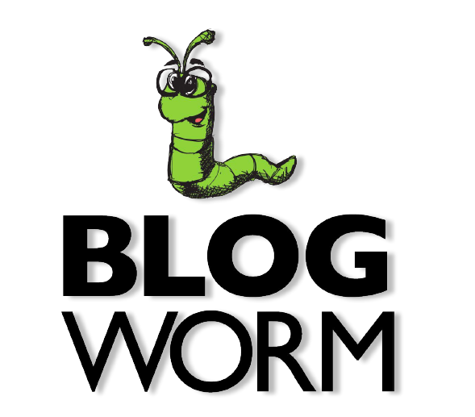
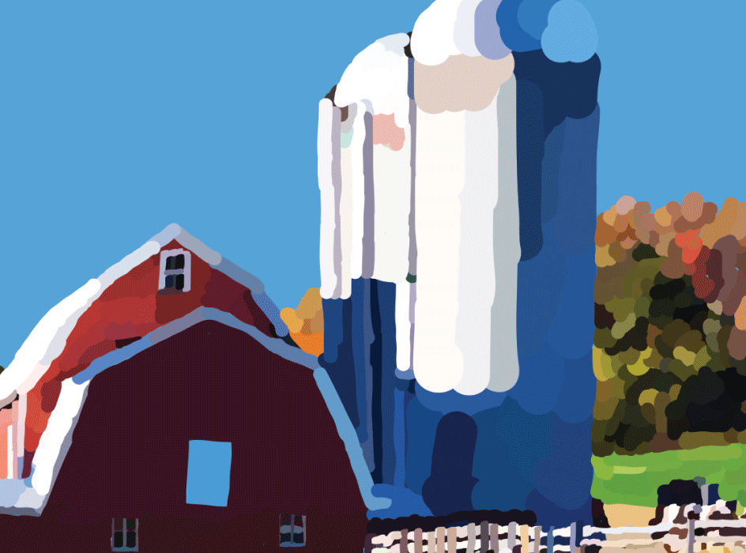

UX/UI Case Study
UX & UI Skills
The user research is to design each component such as with journey maps, storyboards, by gathering information with user tests this helps with the redesign to better analyse and assess the content.
The user empathy is best formed after user tests when there is a better idea of who the user is that uses the website.
My approach to interviewing is zoom meetings at this time and giving the interviewee steps to go through the design. I like to give a scenario while interviewing individuals in order to give each person a better understanding of my design thought process.
Blog Worm Case Study
In a three week timeframe I gathered user information for the redesign of feedly.com that consist a storyboard, problem statement, wireframe, survey response, user insight, UI Inspiration, proto persona, and user persona. Every component design that I listed was put together with HTML/CSS, and JavaScrpt in a one page protoype design of Blog Worm.
Homepage redesign

Government Agency Redesign Case Study
In the redesign of the Department of Agriculture. One thing that was needed was showing all the topics on the homepage in a image slider. This report shows four weeks of UI research that evaluates the Department of Agriculture. Each design component is coupled together showing various user research that includes wireframes, a proto-persona, new site navigation with card sorting, and clickable prototypes that demonstrate the homepage redesign of the Department of Agriculture. My role & responsibilities were listing every topics in a image slider on the homepage for a cleaner, crisper layout with a little visual appeal with a image slider.
Homepage redesign

Bootstrap Case Study
My government agency redesign case study created with Bootstrap.